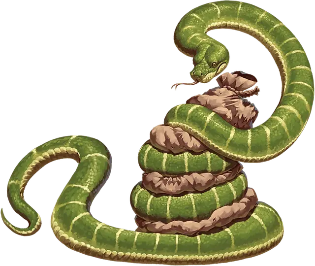

Удав
Constrictor Snake
Большой Зверь, без мировоззрения

Класс Доспеха 12
Хиты 13 (2к10 + 2)
Скорость 30 футов, плавая 30 футов
| мод | спас | ||
|---|---|---|---|
| СИЛ | 15 | +2 | +2 |
| ЛОВ | 14 | +2 | +2 |
| ТЕЛ | 12 | +1 | +1 |
| мод | спас | ||
|---|---|---|---|
| ИНТ | 1 | −5 | −5 |
| МДР | 10 | +0 | +0 |
| ХАР | 3 | −4 | −4 |
Чувства слепое зрение 10 футов, пассивное Восприятие 10
Опасность 1/4 (50 опыта)
Бонус мастерства +2
Среда обитания Болото, Лес, Под водой, Пустыня
Действия
Укус. Рукопашная атака оружием: +4 к попаданию, досягаемость 5 футов, одно существо. Попадание: Колющий урон 5 (1к6 + 2).
Сжимание. Рукопашная атака оружием: +4 к попаданию, досягаемость 5 футов, одно существо. Попадание: Дробящий урон 6 (1к8 + 2), и цель становится схваченной (Сл высвобождения 14). Пока существо схвачено, оно опутано, а удав не может сжимать другую цель.